Improving the Determination of Supernova Cosmological Redshifts by Using Galaxy Groups
E. R. Peterson
, B. Carreres, A. Carr, D. Scolnic, A. Bailey, T. M. Davis, D. Brout, C. Howlett, D. O. Jones, A. G. Riess, K. Said, G. Taylor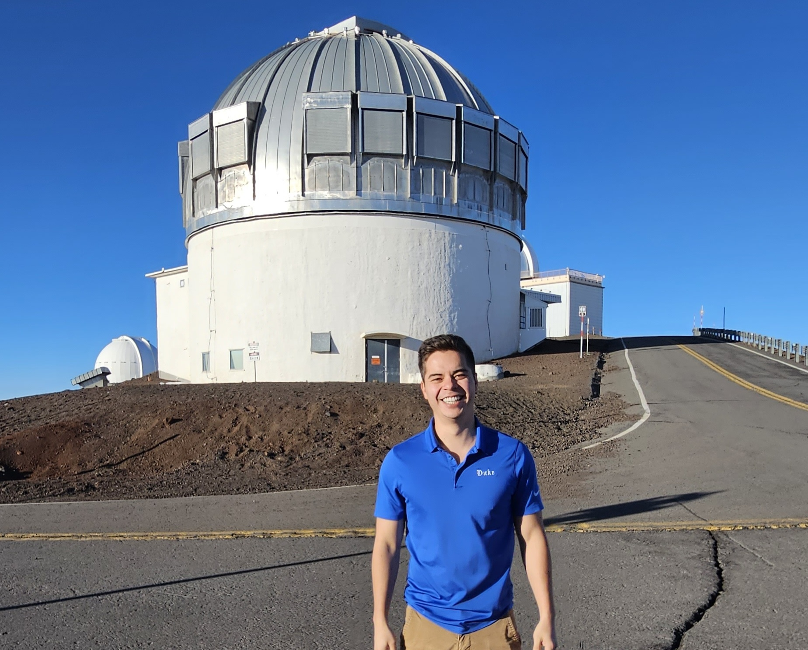

Type Ia Supernovae Hubble diagram
Type Ia supernovae are exploding white dwarf !
Type Ia supernovae are standard candles !


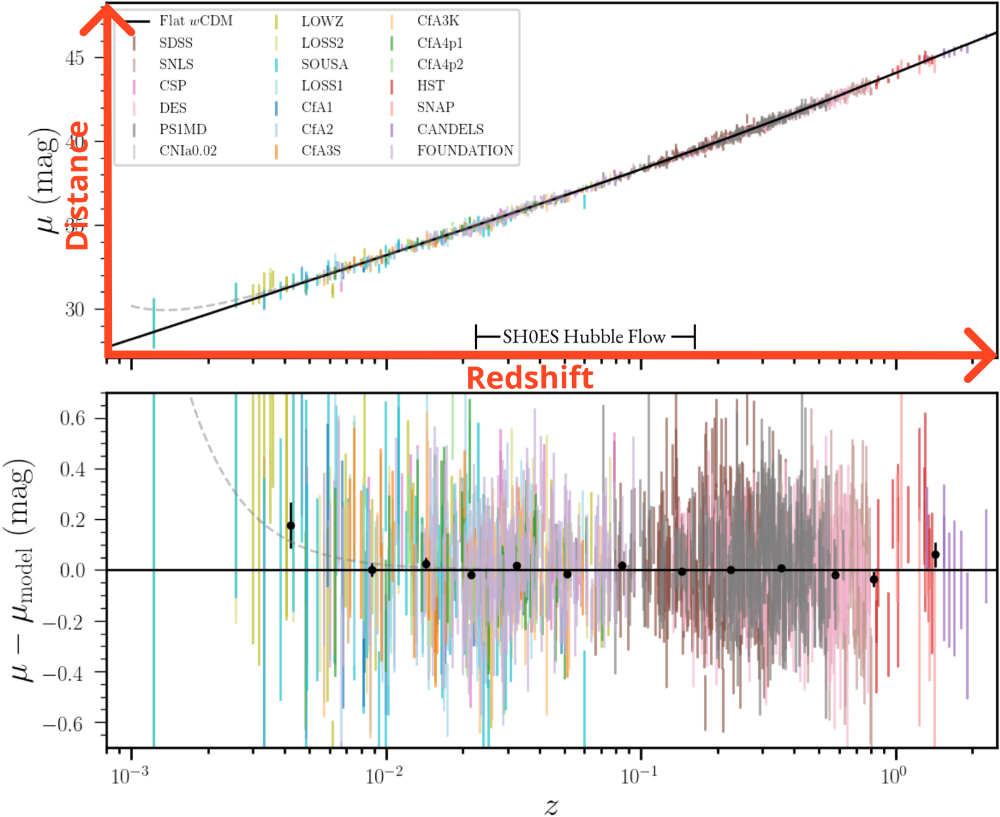
What is the impact of PVs on the Hubble Diagram?
PVs add scatter to the Hubble diagram !
\(1 + z_\mathrm{obs} = (1 + z_\mathrm{cos})(1 + z_p)\); \(z_p\simeq v_p / c\)
Scattering from peculiar velocties:
\(\sigma_\mu \simeq \frac{5}{\ln10} \frac{\sigma_v}{cz} > 0.1 \text{ mag at } z < 0.02\)
This noise is correlated on large scales and can impact cosmology (Davis et al. 2011, Peterson et al. 2022, Carreres et al. 2024)
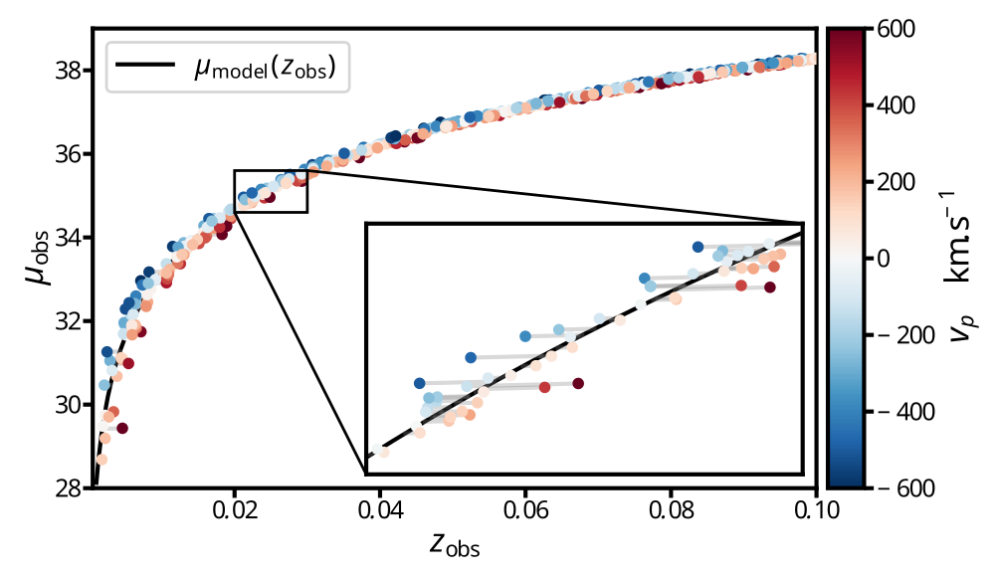
Correcting PVs contribution at different scales
\(1 + z_\mathrm{obs} = (1 + z_\mathrm{cos})(1 + z_p )\)
\(1 + z_p = (1 + z_\mathrm{virial})(1 + z_\mathrm{coh.})(1 + z_\mathrm{ext. coh.}) \)
\(z_\mathrm{virial}\) and \(z_\mathrm{coh.}\) correction tested in Peterson et al. 2022 for the Pantheon+ analysis
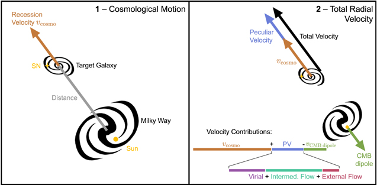
- A - Corrected with CMB dipole
- B - Corrected by averaging redshift of galaxy group members
- C & D - Corrected using PV field reconstruction (e. g. 2M++ - Carrick et al. 2015, Cf3 - Tully et al. 2016)
Correcting PVs contribution at different scales
\(z_\mathrm{virial}\) and \(z_\mathrm{coh.}\) correction tested in Peterson et al. 2022 for the Pantheon+ analysis
Group redshifts of \(\sim 30 \%\) of the SNe Ia sample (identified in Tully et al. 2015) already results in an improvement in term of the \(\chi^2\) of the Pantheon+ hubble diagram !
Galaxy groups in Pantheon+ data
In Peterson et al. 2022, only \(\sim 30 \%\) of SN Ia hosts assigned to a group
In this work we add 30 groups using data from the Anglo-Australian Telescope (AAT)
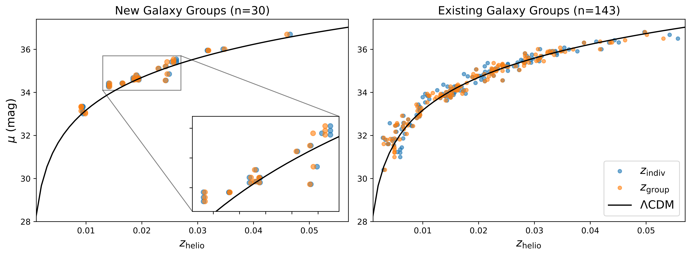
Galaxy groups and SN Ia hosts in the Uchuu simulations
Uchuu UniverseMachine N-body simulation:
- 2 Gpc \(h^{-1}\) side-lenght box split into 64 sub-boxes of volumes equivalent to \(z_\mathrm{lim}\sim0.085\)
- Galaxies are grouped using a FoF algorithm with a linking lenght \(l=0.3\) Mpc \(h^{-1}\)
- We draw 500 000 galaxies as SNe Ia hosts following
Wiseman et al. 2021 mass distribution
 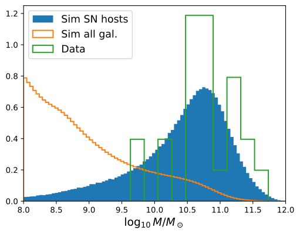
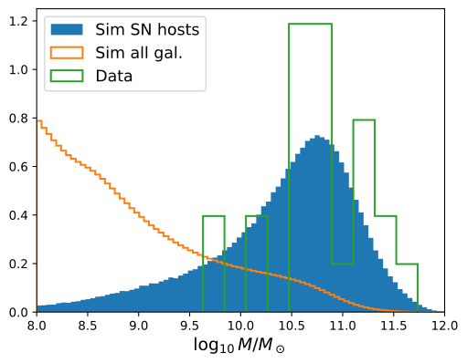
Results: Proportion of SNe Ia host in Galaxy groups
From our data we found that 90% of SN Ia host galaxies are in groups and 66% from the simulation.
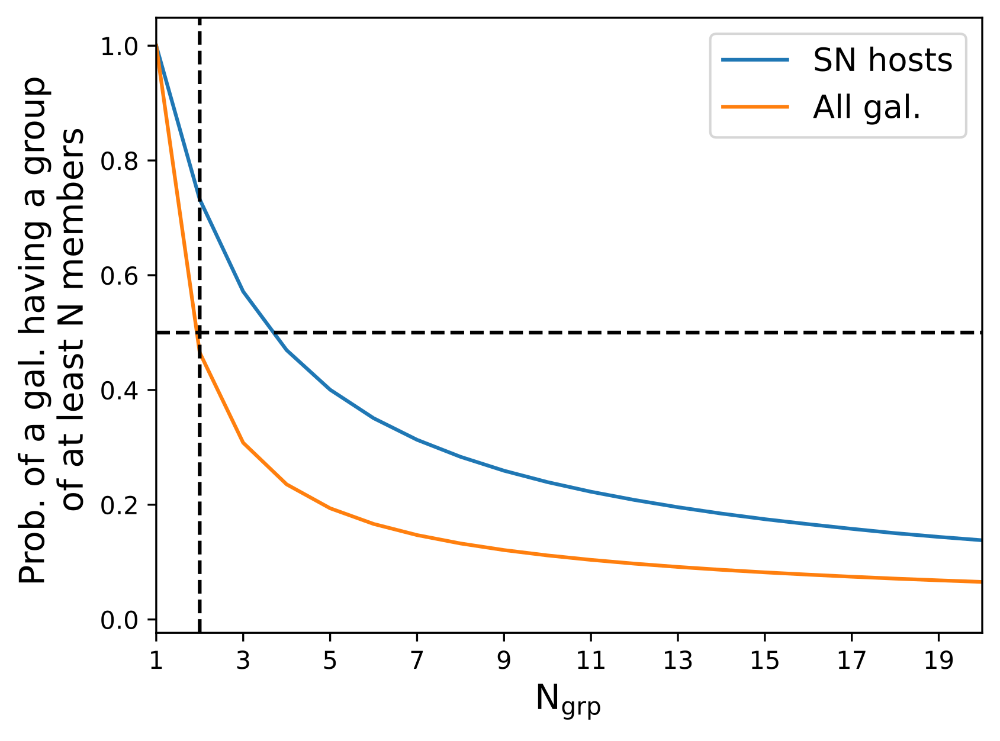
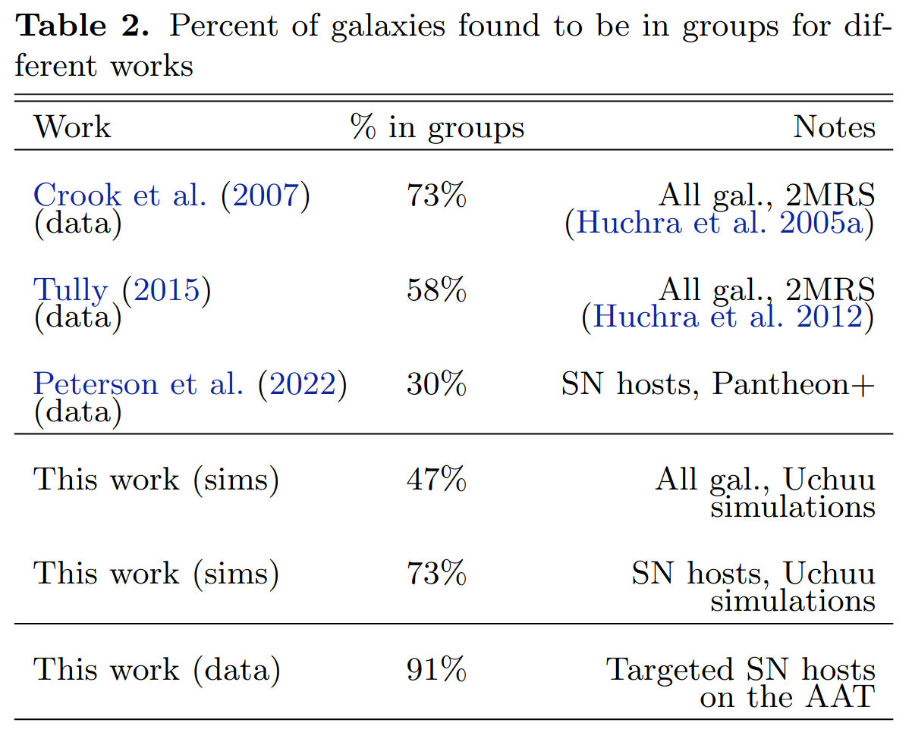
Results: Improvements on Hubble residuals
We found that group averaged redshifts improved the residuals 50% to 55% of the time
But improvements are larger than worsening !
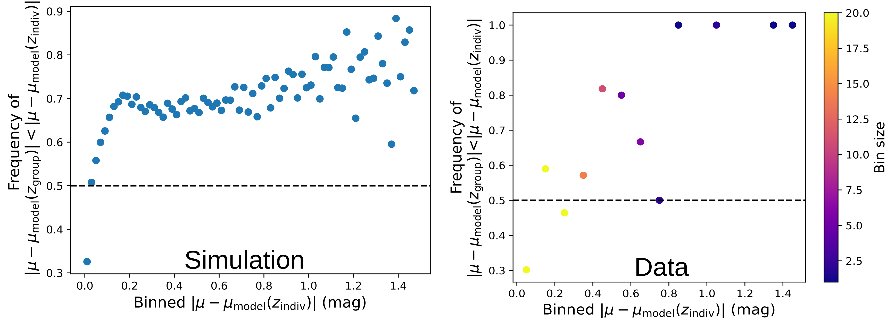
Results: Improvements on Hubble residuals
On simulation maximum improvement \(\delta \sim 0.120\) mag for larger group (\(N > 6\)) and lower redshift (\(z < 0.018\))
On data maximum improvement \(\delta \sim 0.312\) mag for the same bin
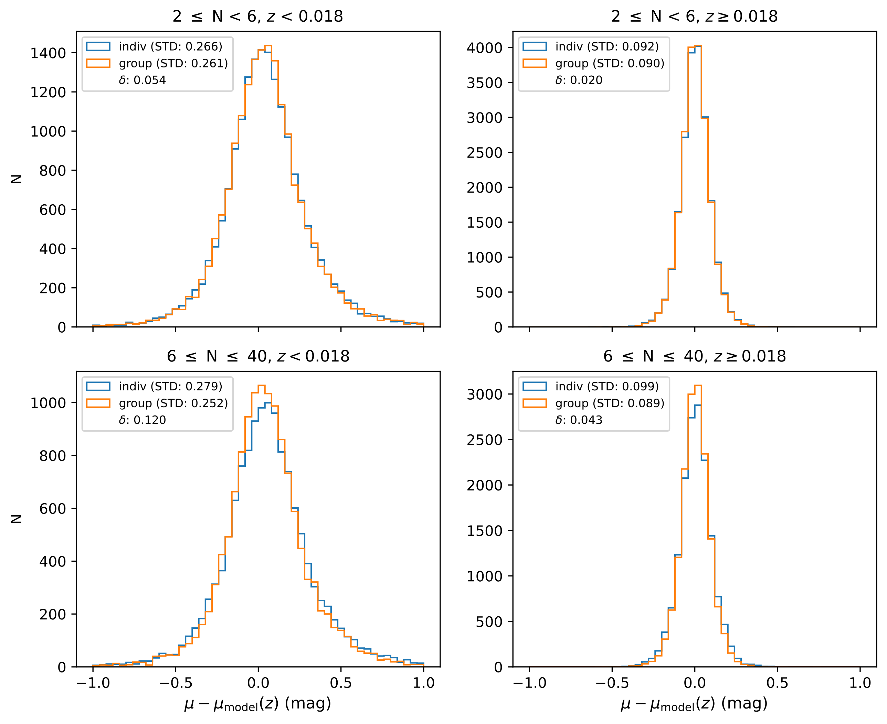
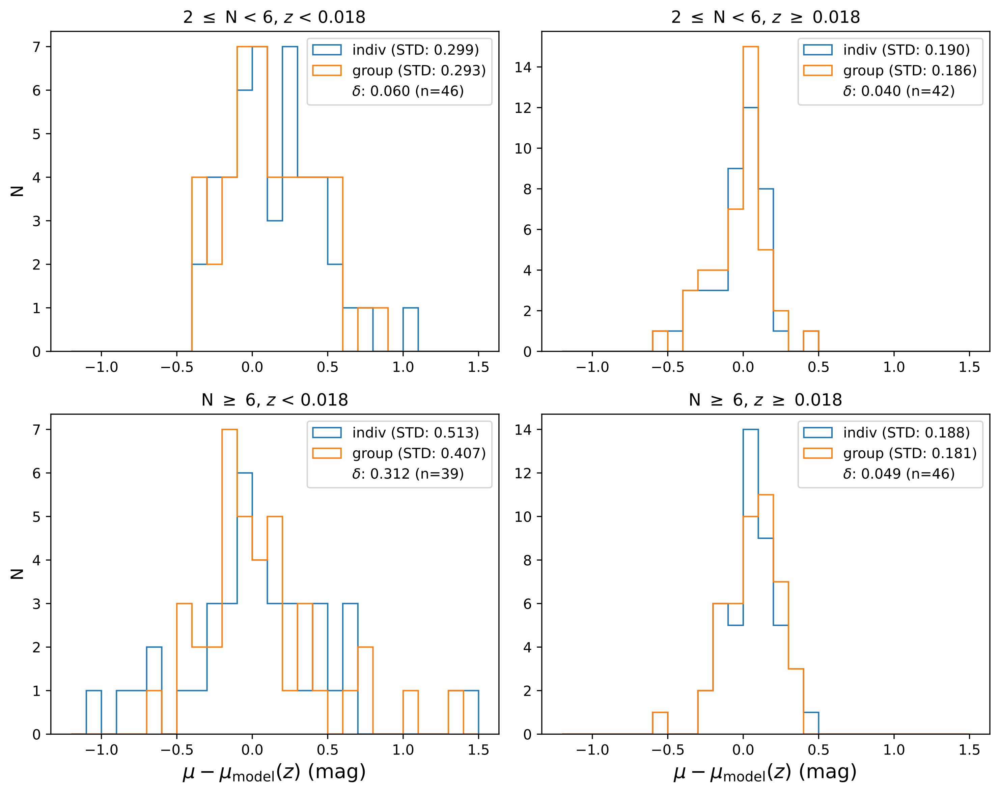
Conclusion
- Group redshifts improve the Hubble diagram residuals slightly more than 50% of the time
- They results in large improvement more frequently than worsening the Hubble diagram residuals
- Largest improvements come from large groups (\(N > 6\)) at very low redshift (\(z < 0.18\))
Redshift of galaxy groups can be use to increase statistical power of low-z SNe Ia sample in the incoming generation of surveys as the Rubin-LSST
Thanks for your attention !